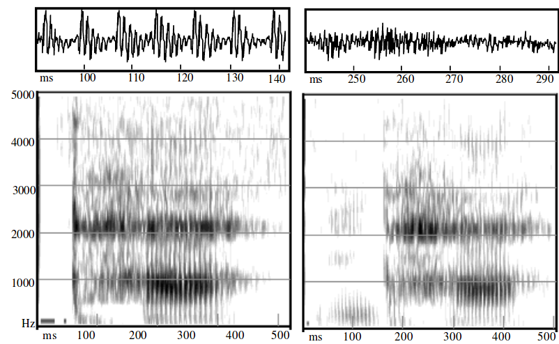
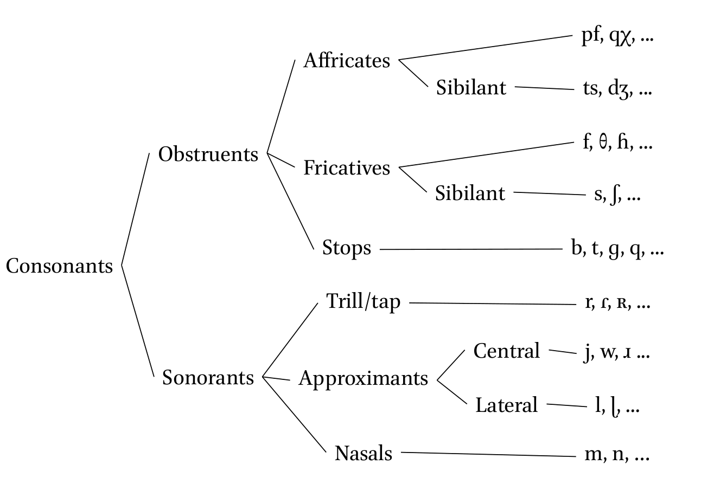
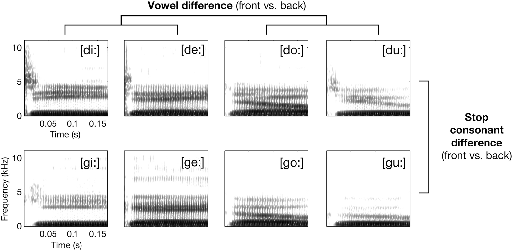
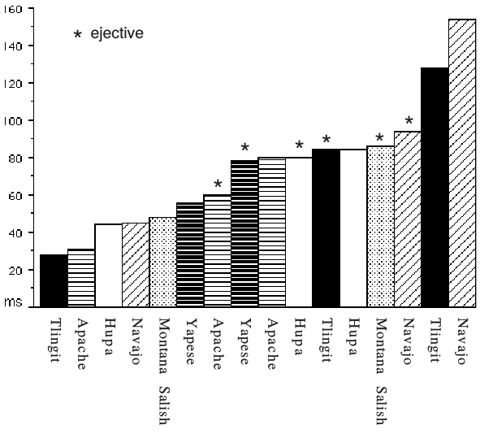

5 Phonations, Obstruents
This lecture was recorded.
We have already discussed:
- Waves, Fourier transform, Tube model
- Vowels
- Sonorants
Today we are going to talk about
- Airostream mechanisms
- Phonations
- Obstruents
5.1 Airstream mechanisms
| egressive | ingressive | |
|---|---|---|
| pulmonic | majority of sounds | rare |
| glottalic | ejectives | implosives |
| velaric | clicks |
Here are some MRI videos.
5.2 Phonation types
Modal voice — the vocal folds are closed during half of each glottal cycle and open during the other half (approximately). Thus, the proportion of time that the glottis is open (the open quotient) during each cycle is 0.5.
Creaky voice — the vocal folds are held together loosely, and air bubbles up through them. This cause longer closed phase of the glottal period and a comparably shorter open phase (and thus a smaller open quotient).
Breathy voice — the vocal folds vibrate, but without much contact (for some people the vocal folds do not completely close during breathy voicing). So the glottis is open for a relatively long portion of each glottal cycle. A device called an artificial larynx is often used as a prosthesis for patients who have had their larynx removed due to disease.
A device called an artificial larynx is often used as a prosthesis for patients who have had their larynx removed due to disease.

- A — the closed vocal folds produce a glottal stop ʕ
- B — the air forced through the closed vocal folds produce creaky voice
- C — air can go through vocal folds without extra pressure, making them vibrate, this is called modal voice
- D — high rate of airflow makes vocal folds vibrate even if they are slightly pulled apart (breathy voice)
- E — pulling the vocal folds further apart doesn’t allow them vibrate, the result is a voiceless sound
- F — pull the vocal fold further apart, this is called aspiration
In (Peter Ladefoged 1971) it is suggested that there might be a continuum of phonation types from most open to most closed:
voiceless > breathy > modal > creaky > glottal closure
5.2.1 Breathy phonation example
As a consequence of noise in breathy phonation, there is much more aperiodic energy across the spectrum and the formant structure is less clear (M. Gordon and Ladefoged 2001):

Spectrograms of modal and breathy voiced nasals in the Jalapa Mazatec words /nthǽ/ ‘seed’ and /ndǽ̰/ ‘horse’ (female speaker)
5.3 Obstruents

For obstruents the articulators form constrictions and occlusions within the vocal tract that generate aperiodic noise as the airflow passes through obstructions:
- much more restricted airflow;
- acoutically, little or no of formant structure
5.3.1 Torbulence
The main factors that determine whether airflow is turbulent:
- the size of the channel and
- the volume velocity of the airflow (volume of air going past a certain point per unit time).
If 100 cm\(^3\) per second of air flows through a channel, turbulent airflow is created if the channel area is less than 10 mm\(^2\) , but not if the channel area is 20 mm\(^2\) . It’s easier to get turbulent airflow from a narrow straw than a wide one.
5.3.2 Fricatives
- sibilant are most intensive fricatives vs. non-sibilant
- for sibilants
- the constriction between the alveolar ridge, or in the postalveolar area and the tip of the tongue, or the blade of the tongue
- a second constriction between the upper and lower incisors must be narrow so that the airstream is directed over the edges of the teeth, creating turbulent airflow behind the teeth
- for non-sibilants noice is not so prominent, hardly audible

This diagram shows the results for some models of velar and palatal consonants compared to a single tube model of a neutral vowel. (adapted from (Fant 1960b: 73))
5.3.3 Stops
- The main articulatory posture during a stop is complete closure of the vocal tract, acoustically silence.
- However, languages use a great variety of stops, utilizing different places of articulation, stop release sounds, and accompanying noises. Different places of articulation are destinguishable because of the coarticlulation with vowels. See the following picture from (Obleser et al. 2010):

5.3.4 Voiced Onset Time (VOT)
This notion was introduced in (Lisker and Abramson 1964), very influential work:
Picture 5.1: picture from www.connectedpapers.com
VOT is the timing of glottal pulsing relative to supraglottal articulation

Picture 5.2: A graphical representation of the VOT of voiced, tenuis, and aspirated stops, Wikipedia
(Abramson and Whalen 2017) argue that VOT is a cross-linguistically useful (and simple) measure, even if not a universal discriminator.
- aspirated voiced in Hindi: pʰ, p, b and bʰ. – both latter sound types show negative VOT, bH showing breathy voice filling before the onset of modal voice)
- pre-aspirated in Swedish, Icelandic, Scots Gaelic and Tarascan – period of aspiration preceding a silent CD
- Korean: unaspirated, slightly aspirated and strongly aspirated (degree of VOT)
- Considering a sample of languages, (Cho and Ladefoged 1999) show that VOT measurements do not directly depend on sound types and oppositions, when there are ejectives in a phonological system:
